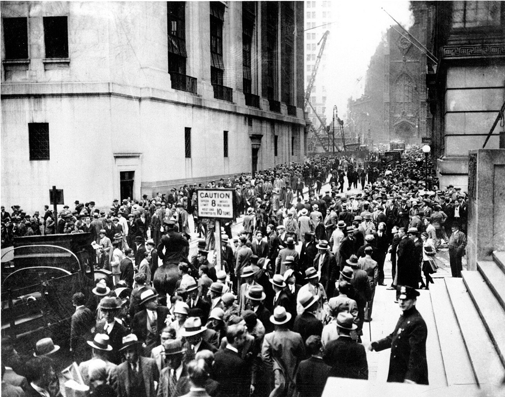
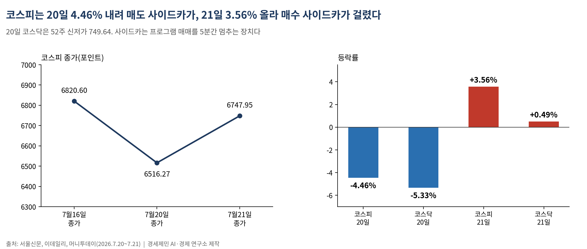
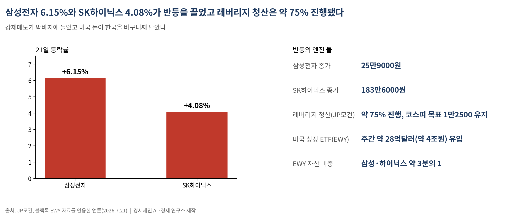
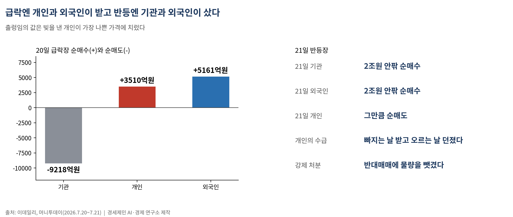

[주식공부] 코스피 하루 만에 4.46% 빠지고 3.56% 반등…이틀 사이 사이드카가 방향을 뒤집었다
7월 20일 매도 사이드카, 21일 매수 사이드카…반도체 수출 180.6% 폭증이 노이즈 밑에서 지수를 건져 올렸다, 급락엔 개인이 받고 반등엔 기관이 샀다

(데이터 기준시점: 2026년 7월 21일 종가 / 학습 완료 인계보고서 2026년 1월 말, 이후 웹검색 검증)
이틀 사이 코스피가 4.46% 무너졌다가 3.56% 되올랐다. 20일 월요일 지수는 6516.27로 주저앉아 매도 사이드카가 걸렸고, 21일 화요일엔 6747.95로 튀어 올라 매수 사이드카가 걸렸다. 같은 프로그램 매매가 24시간 만에 방향만 바꿨다.
방향을 되돌린 건 호재가 아니었다. 강제로 팔던 물량이 소진됐고, 그 밑에 반도체 수출 180.6% 폭증이라는 실물이 깔려 있었다. 반등의 뼈대는 심리가 아니라 숫자였다.
1. 매도 사이드카 다음 날 매수 사이드카가 걸렸다

20일 코스피는 303.79포인트(4.46%) 내린 6516.27에 마쳤다. 코스닥은 5.33% 빠진 749.64로 52주 신저가를 새로 썼다. 오전 10시 52분 코스닥, 11시 21분 코스피에서 잇따라 매도 사이드카가 발동됐다.
사이드카는 프로그램 매매를 5분간 멈추는 장치다. 선물 가격이 급하게 5% 넘게 오르거나 내리면, 그 신호를 받아 한꺼번에 쏟아지는 기계 주문을 잠깐 세운다. 값이 급변하면 아예 거래를 멈추는 서킷브레이커보다 한 단계 약한 브레이크다. 매도 사이드카는 팔자 주문을, 매수 사이드카는 사자 주문을 세운다.
21일은 정반대였다. 낮 12시 41분 코스피200 선물이 급등하면서 매수 사이드카가 걸렸다. 지수는 231.68포인트(3.56%) 오른 6747.95, 코스닥은 0.49% 오른 753.34에 마감했다. 브레이크가 하루는 팔자를, 다음 날은 사자를 세운 셈이다. 이 낙차 자체가 지금 지수를 움직이는 게 펀더멘털이 아니라 플로우(자금 흐름)임을 보여준다.
2. 반등을 만든 건 호재가 아니라 강제매도의 소진이었다

21일 상승을 이끈 건 반도체 대장주다. 삼성전자는 6.15% 오른 25만9000원, SK하이닉스는 4.08% 오른 183만6000원에 마쳤다. 두 종목이 지수를 끌어올리는 동안 코스닥은 제자리였다.
값을 밀어 올린 엔진은 둘이다. 하나, 강제매도가 막바지다. JP모건은 국내 레버리지(빚을 낸 투자) 청산이 약 75% 진행됐다고 진단하며 코스피 목표 1만2500을 유지했다. 팔아야 하는 물량의 4분의 3이 이미 빠졌다는 뜻이다. 둘, 미국 자금이 한국을 바구니째 담았다. 미국에 상장된 한국 대표 ETF(블랙록 EWY)에 주간 약 28억달러(약 4조원)가 역대 최대로 들어왔다. 이 바구니 자산의 3분의 1이 삼성·하이닉스라, 미국 돈이 EWY를 사면 두 대형주가 기계적으로 밀려 오른다. 코스닥이 조용했던 이유가 여기 있다.
3. 노이즈 밑에 반도체 수출 180.6%라는 실물이 있었다

관세청은 21일 7월 1~20일 수출이 549억달러로 지난해 같은 기간보다 52.3% 늘어 이 기간 역대 최대라고 밝혔다. 이 가운데 반도체가 221억달러로 180.6% 폭증해, 전체 수출의 40.3%를 차지했다. 인공지능(AI) 서버용 고대역폭메모리(HBM)와 기업용 저장장치 수요, 메모리 값 반등이 겹친 결과다.
간밤 미국장도 거들었다. 20일(현지) 나스닥종합지수는 0.41% 오른 25625.37, 스탠더드앤드푸어스(S&P)500지수는 0.12% 오른 7466.57에 마쳤다. 마이크로소프트가 AMD의 AI 시스템을 도입한다는 소식에 마이크론이 4.8%, 샌디스크가 5.5% 뛰며 반도체에 저가 매수가 들어왔다. 미국 반도체가 먼저 돌아서자 한국 반도체가 다음 날 따라 올랐다.
4. 급락엔 개인이 받고 반등엔 기관이 샀다
수급표를 보면 손이 갈렸다. 20일 급락장에서 기관은 9218억원어치를 순매도했고, 개인과 외국인이 각각 3510억원, 5161억원을 순매수했다. 21일 반등장에선 거꾸로 기관과 외국인이 함께 2조원 안팎을 사들이는 동안 개인은 그만큼을 순매도했다.
개인은 빠지는 날 받아 들고 오르는 날 던졌다. 상반기 내내 개인은 빚과 ETF로 지수를 떠받쳤지만, 예탁금이 마르자 반대매매(빚으로 산 주식을 증권사가 강제로 파는 것)에 물량을 뺏겼다. 지수를 만든 것은 반도체 공장과 엔지니어인데, 출렁임의 값은 빚을 낸 개인이 가장 나쁜 가격에 치렀다. 되사는 쪽은 고점에 팔아 현금을 쥔 기관과 외국인이다.
5. 거시 다섯 잣대와 다음 주 분수령
거시 다섯 잣대는 이렇게 섰다. 원달러 환율은 21일 5.0원 내린 1473.4원으로 강세를 이어갔다. 수출 호황과 SK하이닉스 미국주식예탁증서(ADR) 상장에 따른 달러 매도 기대가 원화를 떠받쳤다. 국제유가는 서부텍사스산 원유(WTI)가 배럴당 83.23달러(약 12만3000원), 브렌트유가 89.22달러(약 13만1000원)로, 미·이란 긴장과 호르무즈해협 우려에 올랐다. 미국 10년물 국채금리는 4.52% 안팎으로 중순 급등에서 다소 내렸다. 물가는 한국이 6월 3.2%, 미국이 6월 3.5%로 목표 2%를 여전히 웃돈다.
다음 주 달력은 촘촘하다. 22일 알파벳(구글 모회사), 23~24일 인텔 실적이 AI 투자를 줄이는지 아닌지를 가른다. 27일엔 중국 창신메모리(CXMT)가 상장하고, 28~29일 미국 연방준비제도 회의(FOMC), 29일 SK하이닉스·마이크론·메타·마이크로소프트, 30일 삼성전자 확정실적이 줄줄이 나온다. 기본 시나리오는 6500~7100선의 매물 소화다. 빅테크가 투자를 지키고 삼성·하이닉스 실적이 메모리 값 반등을 확인하면 회복이 빨라진다(상향). 유가가 90달러대에 눌러앉거나 반도체 고점론이 재점화하면 6500선을 다시 시험한다(하향).
한 주 안에서 사이드카가 두 번, 방향을 바꿔 걸렸다. 기계가 세운 팔자와 사자 사이에서, 강제로 팔린 쪽과 실물 수출이 받친 쪽은 다른 자리에 서 있다.
─────────────────────
※ 이 기사는 인공지능 프로그램 클로드 오푸스 4.8(Claude Opus 4.8)을 활용해 작성했다.
참고문헌
· "코스피, 3%대 상승하며 6740선 마감…외국인·기관 2.2조 '사자'", 이투데이, 2026.7.21., https://www.etoday.co.kr/news/view/2605774
· "코스피, 기관·외국인 매수에 6700선 반등…수출 호조 영향 [fn마감시황]", 파이낸셜뉴스, 2026.7.21., https://www.fnnews.com/news/202607211607246838
· "'급락' 코스피·코스닥 이틀 연속 매도 사이드카…4%대 하락(종합)", 뉴스1, 2026.7.20., https://www.news1.kr/finance/market-exr/6232733
· "코스닥 '매도' 사이드카, 30분 뒤엔 코스피도...동반 '급락' 마감", 머니투데이, 2026.7.20., https://www.mt.co.kr/stock/2026/07/20/2026072015465315981
· "7월 1~20일 수출 52% 증가…반도체 180.6%↑", 헤럴드경제, 2026.7.21., https://biz.heraldcorp.com/article/10814581
· "저가매수? 반도체 우려 완화?…삼전·닉스, 6%·4%대 반등", 세계일보, 2026.7.21., https://segye.com/newsView/20260721517577
· "미국주식시황: 반도체 회복과 나스닥 반등", 베가스투자, 2026.7.20., https://www.vegastooza.com/post/us-stock-market-wrap-2026-07-20
· "원·달러 환율, 5.0원 내린 1473.4원 마감(종합)", 뉴시스, 2026.7.21., https://www.newsis.com/view/NISX20260721_0003717269
· "지정학적 우려와 달러 공급 확대…환율, 1470원대서 등락[외환브리핑]", 이데일리, 2026.7.21., https://edaily.co.kr/News/Read?mediaCodeNo=257&newsId=02689606645516816
· "US 10 Year Treasury Note Yield", Trading Economics, 2026.7.20., https://tradingeconomics.com/united-states/government-bond-yield
사진 출처
· [대표사진] Associated Press, "Crowds gathering outside New York Stock Exchange.jpg", 위키미디어 공용, 퍼블릭 도메인, https://commons.wikimedia.org/wiki/File:Crowds_gathering_outside_New_York_Stock_Exchange.jpg
※ 이 기사는 인공지능을 활용해 작성했습니다.
관련기사
- 코스피 7월에 21.07% 빠졌다, 나스닥은 4.72% 빠졌다
- [주식공부] 사상 최대 실적 낸 이틀은 내렸고, 헤지펀드 청산 뒤 17.91% 올랐다
- [주식공부] 코스피 한 주 8.77% 폭락…폭락하는 날 한국은행은 금리를 올렸다
- [주식공부] 코스피가 5.80% 오를 때 코스닥은 20.13% 올랐다
저작권자 © AI경세제민 무단전재 및 재배포, AI학습 및 활용 금지